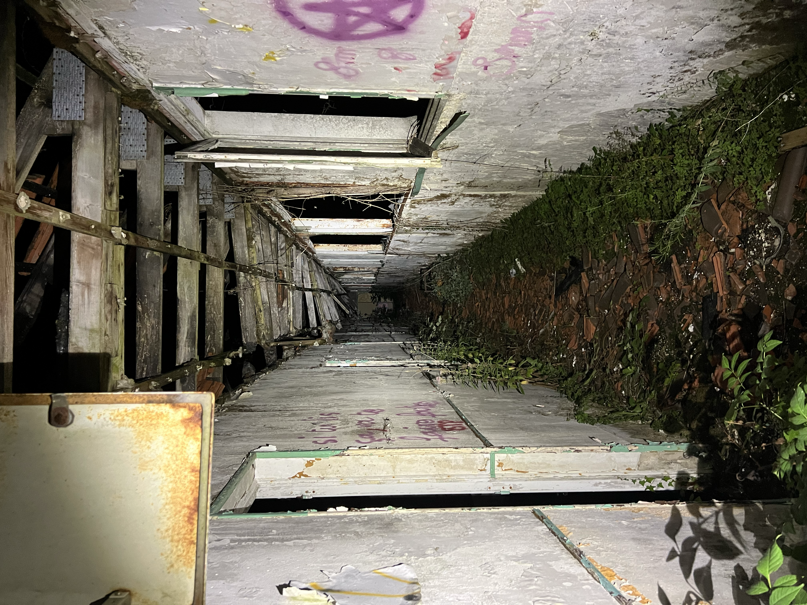
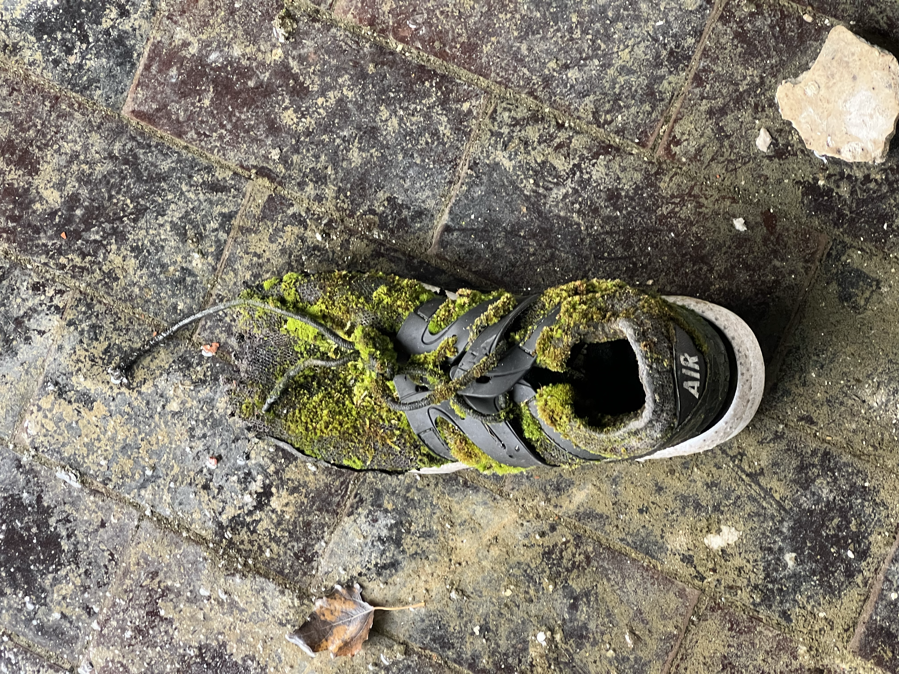
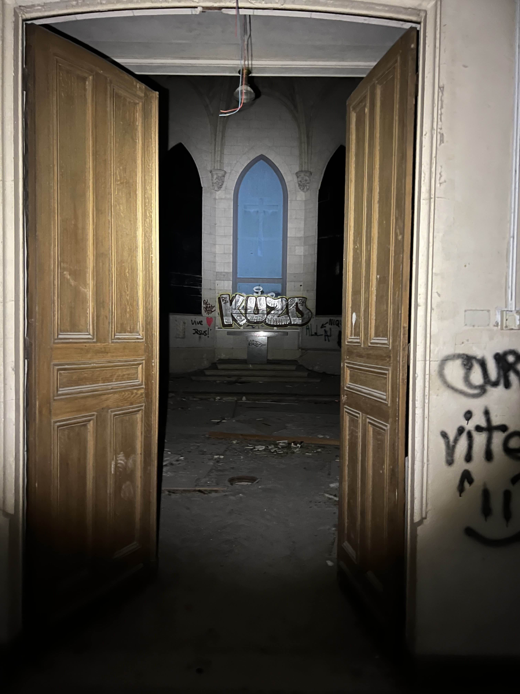
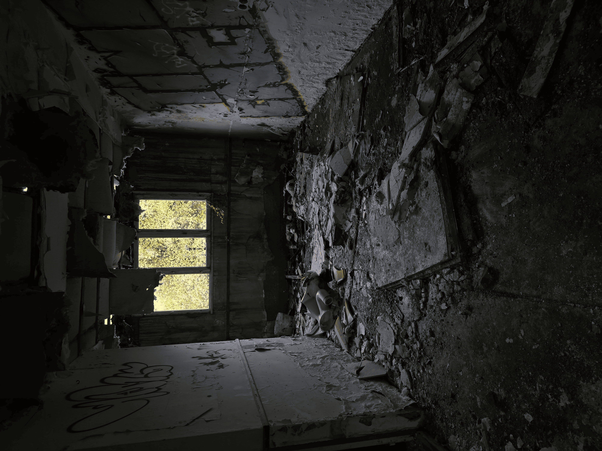
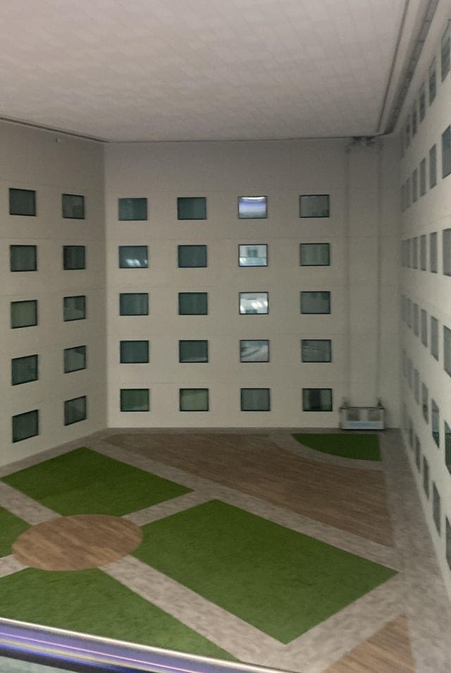

L’urbex : Quand le temps se fige
Pratique souvent privée, illégale et risquée, l'urbex — ou exploration
urbaine — attire un nombre croissant d'adeptes. Ils décrivent une
expérience singulière : immersion dans des lieux abandonnés, confrontation au
silence et parfois au danger, redécouverte du passé à travers
l'usure du temps. Pourquoi ce mélange de risque, de nostalgie
et d'esthétique exerce-t-il une telle fascination ?
Une attirance pour le danger et l’interdit
Pour beaucoup, la transgression fait partie intégrante de l'expérience. Entrer
sans autorisation dans des bâtiments pour la plupart condamnés, progresser
dans des couloirs sombres ou escalader des structures en pleine dégradation
crée une tension qui intensifie exponentiellement la perception instable du lieu.
Le simple fait de savoir que l'on ne devrait pas être
présent dans ces lieues augmente drastiquement l'adrénaline, donnant à chaque
exploration une expérience unique.

La beauté d’une décomposition

Dans ces espaces désertés, abandonnées, la dégradation devient le seul
langage vivant. Les vitres brisées, les objets laissés sur place,
les tags sur les murs et les composent un récit muet
dans un silence obscure où tout se dégrade à force d'avancer.
Les traces d'humidité, les poussière et la végétation envahissant ces
bâtiments transmettent à ces lieux une forme d'élégance involontaire, fragile
et éphémère.
Le poids du silence
L'absence totale d'activité crée un silence complet. Chaque pas résonne
avec une intensité disproportionnée, et le moindre bruit extérieur semble
étranger au lieu. Ce silence amplifié impose un rapport plus attentif
au reste : il oblige à écouter les craquements des structures,
les vibrations du vent ou le froissement d'un objet abandonné.
Cette perception accrue transforme l'exploration en expérience sensorielle, où l'oreille
devient un outil d'analyse du lieu autant qu'un indicateur de
sa fragilité.

La mémoire des structures
Les bâtiments abandonnés conservent des traces matérielles de leurs anciennes
fonctions. Les plans d'un hôpital laissé sur un bureau, les
vestiaires d'une usine, les salles de classe d'une école fermée
illustrent une activité effacée mais lisible. Ces vestiges permettent d'identifier
les usages passés, de comprendre l'organisation des espaces et de
reconstituer des fragments de contexte historique. L'urbex devient alors une
forme d'observation documentaire, où l'explorateur interprète les restes pour
saisir ce que fut le lieu avant sa désertion.
Le basculement entre lumière et obscurité
La transition entre le jour et la nuit modifie radicalement la
perception des lieux abandonnés. Sous la lumière naturelle, les volumes
se dévoilent, les détails sont lisibles et l'environnement paraît plus
tangible. À la tombée du soir, ces repères disparaissent : les
couloirs deviennent indéchiffrables, les ombres se prolongent et les distances
se brouillent. Cette variation transforme la structure même du lieu,
qui passe d'un espace observable à un territoire incertain, où
l'explorateur ne se fie plus à la vision mais à l'intuition
pour interpréter ce qui l'entoure.

L’urbex : toute une esthétique
Les ruines captivent, elles bouleversent touts repères. De jour, elles
offrent une lumière crue qui révèle chaque fissure et dégradation
des lieues. De nuit, elles changent radicalement de dimension : les
détails et les fissures se dissolvent dans l'ombre, le silence
s'épaissit, l'espace n'a pu aucuns repères. Ce contraste entre clarté
et obscurité crée une relation des sens instable, où l'explorateur
oscille entre observation et projection imaginaire.

Cette atmosphère rejoint l’esthétique des liminal spaces, ces environnements vides
où l’absence devient le sujet principal. Couloirs sans destination, pièces désertées,
salles immenses dépourvues de toute vie, qu’elles soient dégradé ou insalubre :
tout semble figé dans une transition permanente, ce qui crée une sorte
de nostalgie qui devient presque un malaise, une confusion pour notre perception
du temps et du réel. L’urbex exploite lui aussi pleinement ce sentiment intense.
Ces lieux ne sont ni vraiment morts ni encore vivants, ils évoquent une
époque révolue tout en restant physiquement présents.
Dans ces espaces coupés du monde, les explorateurs observent un passé en
train de disparaître, en étant complètement impuissant. Une beauté sobre, parfois
inquiétante, mais toujours mémorable. vivants ; ils évoquent une époque révolue tout
en restant physiquement présents. Cette ambiguïté nourrit un attrait puissant : la
beauté naît ici de la décomposition, de ce qui subsiste malgré l’abandon.
Dans ces espaces coupés du monde, l'explorateur observe un passé en
train de disparaître tout en découvrant une esthétique propre à l'érosion
du réel. Une beauté sobre, parfois inquiétante, mais toujours mémorable.